The Unigraphics development staff moved from their Carson facility into four buildings in an industrial park at 5552 Cerritos Avenue in Cypress, CA. Based on the standard MDC facility naming convention this site was forever to be known as the "K-17 Facility". Visitors to this facility were always amazed that it was in the middle of a strawberry field and many of them would snatch fresh berries if they were fortunate enough to be there during harvesting time. Below is a picture of the main building at this site.April, 1980: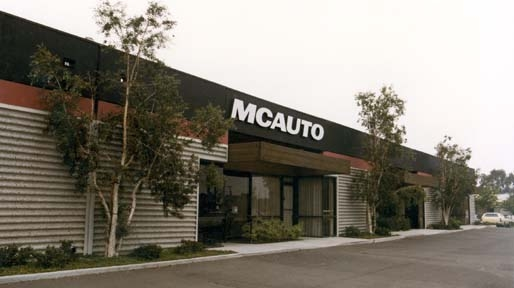
Also during February, the 4th annual Unigraphics Users Group Meeting was held, again at the South Coast Plaza Hotel in Costa Mesa, CA. Over 100 people attended including several senior executives from McAuto. One of the significant features of this years meeting was that this was the first time that separate groups met to discuss topics of special interest such as NC programming, drafting, etc.. This was the beginning of what later become known as the SIG (Special Interest Group) sessions.
The first DEC Special Interest Group meeting was hosted by McDonnell Douglas Astronautics Company in St. Louis, MO. There were 18 people from 9 companies in attendance, however, there was no official participation by McAuto.May, 1980:
Unigraphics is implemented on Data General systems running the AOS operating system. In the same sense as the DEC PDP implementation, this allowed the software to run on the native operating system without the need for the proprietary TSS system. From here on out, except for support of legacy systems, Unigraphics was always to run on the hardware vendors native OS.August, 1980:
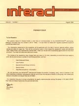September, 1980:
The Unigraphics Users Group publishes the first issue of their new newsletter the "Interact". The first editor was Dave Berry from Harris Corporation, Dayton, OH. In addition to reporting on the success of the spring Users Group Meeting there were columns on user hints, the GRIP Library and the announcement of the election of officers of the Unigraphics Users Group. The officers included:The cover of Volume 1, Number 1 of the "Interact" is shown at the right. For a complete version of this and other early issues, please visit the "Archive".
- Chairman Tom Meagher, Caterpillar
- Vice-Chairman Don Leake, Harris Corporation
- Secretary/Treasurer Christ Tayon, Valeron
McAuto releases Version D2 of Unigraphics. This version included many major enhancements, some of them listed below:October, 1980:Generally speaking, D2 was the first version of Unigraphics that can be considered as supporting true 3D modeling. Up until then, while it was possible to create 3D models (the Unigraphics data base had always supported 3D objects) it was difficult at best and many of the functions and applications either did not support 3D or did not take full advantage of 3D data when it was present.
- Cubic Spline (replaced Spline Under Tension)
- Sculptured Surfaces (Gordon Surface)
- View-Independent Construction via the WCS (Work Coordinate System)
- 3D Transformations
- Finite Element Module (GFEM)
- Multi-Axis Machining Module (GMAX)
Also during September, the first European Users Meeting was held in Surrey, England. Representatives from 12 European Unigraphics customer were in attendance.
The second issue, Volume 1, Number 2, of "Interact" was published. The main topic was the Data General AOS operating system with comments submitted by several customers.November, 1980:
The second DEC Special Interest Group meeting was hosted by Avco Lycoming and was held in Stratford, CT. This was the first of these meeting where there were presentations made by McAuto personnel.December, 1980:
The third issue, Volume 1, Number 3, of "Interact" was published. The main topics in this issue included articles about some early use of Unigraphics at colleges and universities as well as the first suggested standards for submitting programs to the GRIP Library.February, 1981:
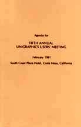May, 1981:
Version D2.1 of Unigraphics was released. This was primarily a maintenance release however it did include support for the DEC VAX system running under VMS. This is the first time Unigraphics was offered on 32-bit computers. Note that Unigraphics was still based on a 16-bit data model, but was modified so that it would run on the VAX. McAuto also announced that they intended to port Unigraphics to the just announced Data General 32-bit systems as well. Note that this also was the first of the so-called "point" releases of Unigraphics. From here on out, all major enhancements releases of Unigraphics would carry an integer designation while maintenance releases would be designated by a decimal point label.Volume 2, Number 1 of the "Interact" is published. It was released in conjunction with the 5th Annual Unigraphics Users Group Meeting held at the South Coast Plaza Hotel in Costa Mesa, CA. There were over 120 people in attendance. Note that at this meeting the formal proposal to form SIG's (Special Interest Groups) was put forward and approved by the attendees. It was decided that at the 1982 meeting that an entire day would be set aside for separate meetings of individual SIG's. Shown at the right is the cover of the agenda from that meeting. To get a better look at this and other meeting agendas, please visit the "Archives".
Volume 2, Number 2 of the "Interact" is published. This issue highlighted several customer success stories.June, 1981:
The 3rd DEC Special Interest Group Meeting was held at Lehigh University in Bethlehem, PA. Note that these meetings were intended for Unigraphics customers who were using DEC (both PDP and VAX) hardware. In addition to presentations by users and McAuto personnel, representatives from DEC also demoed new hardware and made presentations about how CAD, and Unigraphics in particular, was being used at DEC. Note that years later this series of meetings eventually evolved into the Unigraphics Fall Workshops.August, 1981:
Volume 2, Number 3 of the "Interact" is published. This issue reported the details from the February Users Meeting as well as discussing the proposed enhancements in the next version of Unigraphics (D2.2).September, 1981:
McAuto releases Version D2.2 of Unigraphics. This version included many major enhancements, some of them listed below:October, 1981:The 2nd Annual European Unigraphics Users Meeting was held in Woking, England.
- New editing functions for dimensions and drafting entities
- User-definable character fonts
- New methods for creating conic section curves (loft conics)
- New surface/surface integration algorithm
- Major enhancements to the machining modules
- Support for the Data General MV8000 32-bit system
November, 1981:
Volume 2, Number 4 of the "Interact" is published. This issue reported the details from the DEC Special Interest Group Meeting (which had been held in June at Lehigh University).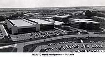 In St. Louis, MO, John Clancy (shown at right) is promoted to Vice President and takes over responsibility for all CAD/CAM operations at McAuto. George Meister continues as the head of the Unigraphics development and support organization in Cypress. At about this same time, the St. Louis Unigraphics staff are moved into the McAuto world headquarters building (shown on the left) and this, along with John Clancy's promotion, establishes St. Louis as the official headquarters for the rapidly growing world-wide Unigraphics operation.
McAuto introduces the new raster based systems, the ADS-100 and DDS-100 at AutoFact in Detroit, MI. 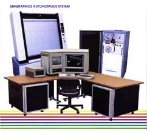The ADS-100 (Autonomous Design Station) was particularly significant since it was the first fully functional CAD/CAM system that cost less then $100,000 (this was in 1981 dollars). Remember, up until this time all CAD systems were based on having one or more design stations hooked to a central CPU. Because of the cost of these large CPU's it was difficult for medium to medium sized companies to purchase a CAD system. What made the ADS-100 different was that it was a stand-alone system (you could say it was the first CAD "workstation"). You got a CPU, a display sub-system, central storage, even the furniture and a really comfortable chair along with a single license of Unigraphics (and remember, back in those days there weren't any sub-modules so you got a full CAD/CAM system). The DDS-100 (Dependent Design Station) were like the older Tektronix terminals in that they were connected to a central CPU. Shown at the right is a fully configured ADS-100 (compare this to today's desktop workstation or even your laptop). Note that the plotter and paper tape punch/reader were extra cost items.December, 1981:
Volume 2, Number 5 of the "Interact" is published. This issue included a couple of articles from customers and also reviewed the proposed agenda of the upcoming 1982 Users Meeting.February, 1982:Note that this issue of "Interact" will be the last one highlighted in this section. For a review of the remainder of the issues of the "Interact", please see the "Archives".
The 6th Annual Unigraphics Users Meeting was held at the South Coast Plaza Hotel in Costa Mesa, CA. This was the first meeting using the new 4 day format with the extra day set aside for newly formed Special Interest Groups (SIG's). At this meeting the following SIG's had special sessions:March, 1982:Also demonstrated at this meeting were the new raster-based display systems, the ADS-100 and DDS-100 (for a more complete review of this new hardware, please visit our "Hall of Hardware").
- Training
- NC
- DEC Based Systems
- DG Based Systems
- Design/Drafting
- System Management
- New Technology
McAuto sells its first ADS-100 system to Rehrig Pacific Company in Los Angles, CA. Rehrig Pacific used it to design plastic crates used by the beverage and dairy industries. Shown below is the McAuto team that was responsible for that first sale.
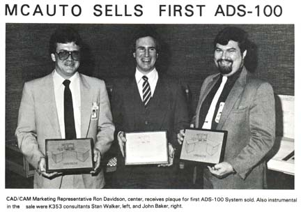
McAuto begins demonstrating the first interactive Solid Modeling system. This was a special prototype product based on PADL (Part and Assembly Description Language) developed at the University of Rochester, in Rochester, NY. PADL, as the name implies, is actually a language based system and was created in order to demonstrate the possible application of Solid Modeling in industry. This first version, PADL-1, was a very simple system using the CSG (Constructive Solid Geometry) approach to creating 3D models. 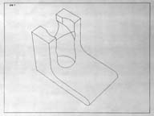 The primary method of construction was to create primitives and then to combine them together using Boolean operations, however this first system only supported 2 primitives, Blocks and Cylinders. The user was further limited by the fact that these objects could only be oriented along the X, Y or Z axis of a single fixed frame of reference. While this may seem to be very archaic compared to today's systems, at the time it represented the leading edge of modeling technology.April, 1982:This "demonstration" system that the Unigraphics group developed was never sold nor was it ever installed at any customer sites. It ran on the DEC VAX system and used a normal Tektronix 4014 terminal for displaying the final models. The system used a series of menus that prompted the user for object type, size and location. Then the user described which booleans to perform and in what order and then how to display the results. Note that this system was used in several sales situations where it was important to show where McAuto thought the direction of the technology was going. And in at least one case, it was used in an actual benchmark. To see more examples of models that you could create in PADL-1, please visit the "Art Gallery".
McAuto releases Version D3.0 of Unigraphics. Note that while this was a very significant release, there was very little actual new functionality. The significance of this release was the fact that this was the first version of Unigraphics to support the new raster display technology (ADS-100 and DDS-100) including for the first time, color entities (there was support for only 7 colors back then, but up until that time, there had only been support for one color, GREEN). What enhancements there were were mostly limited to the changes made to support the new displays, such as editing the color of an object, erasure of deleted/blanked objects without having to do a display repaint, dynamic display control, etc.June, 1982:Note that D3.0 still provided full support for the old Tektronix displays and even allowed customers to mix the different display technologies on the same CPU all running the same version of Unigraphics (note the Unigraphics provided full support of the older style "green screen" storage tube terminals until the release of Unigraphics II).
The 4th DEC Special Interest Group Meeting was held at Los Alamos National Labs in Los Alamos, NM. Approximately 35 people were in attendance and there were presentations by both McAuto and DEC as well as by personnel from the laboratory.July, 1982:
In a meeting on the Queen Mary in Long Beach, CA, Tom Rafferty and his senior technical leaders (known collectively as "Snow White and the Seven Dwarves") met to discuss the need for a major re-engineering of Unigraphics. This and other meetings held over the next month or so culminated in the launching of a major development project which eventually resulted in the release of Unigraphics II. And exactly who were the Seven Dwarves? As stated, these were a group of senior development leaders and included:September, 1982:Note that all of the "Dwarves", with the exception of Gary Newell who passed away spring 2000, are still with the Unigraphics organization.
- George Allen
- Chuck Grindstaff
- Vic Hambridge
- Chris Mehling
- Gary Newell
- Paul Sicking
- Wil Valenzuela
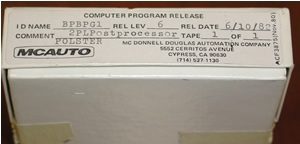McAuto announces Version D4.0 of Unigraphics at the 1982 International Machine Tool Show (IMTS) in Chicago, IL. Some of the new functionality delivered with Version D4.0 included:November, 1982:Also introduced was McAuto's new Robotic off-line programming system, Place.
- GRIP NC
- IGES
- UG-Net (supported asynchronous file transfer between DEC and DG systems)
- Support for HP Pen Plotters
- Analytic Surfaces
- 3D Mass Properties
- Shell Mesh Generation in GFEM
About this time, McAuto decided to change the names of its display stations, shortening them to the A-100 and D-100.
McAuto announces the world's first truly interactive commercial Solid Modeling system, UniSolids, at Autofact 4 in Philadelphia, PA. The highlight of the show was a live demonstration where a model of the Liberty Bell was designed with UniSolids, passed to Unigraphics where a tool path was created using GRIP NC, post processed and then transferred to a 3-axis milling machine via McAuto's DNC system. There a robot (programmed with the Place software) placed blocks of foam board into an automatic fixture on the milling machine where they were machined with the shape of the Liberty Bell (including the crack) and then the robot removed the finished blocks and inserted them in a box, closed the cover and delivered the completed package to the McAuto presenter where he presented it to someone in the large crowd of people watching the demonstration, which was repeated once every hour.February, 1983:Also announced at Autofact 4 was the signing of the first Unigraphics distributors agreement in Japan. This agreement with Daini-Seikosha, Ltd (SEIKO), included both an agreement to resell Unigraphics in Japan as well as a license to use Unigraphics for designing and manufacturing SEIKO products. Pictured below are members of the joint Seiko-McAuto team that negotiated the agreement in Japan.
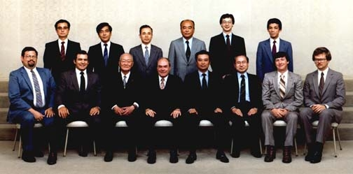
McAuto starts shipping Version D4.0 of Unigraphics.May, 1983:The 7th Annual Unigraphics Users Meeting was held in Costa Mesa, CA. In those days Monday was split into two separate sessions, one for DEC users and one for Data General users (in fact there was quite a rivalry between the two groups as to who had the best sessions as both DEC and DG were also users of Unigraphics). At this meeting Data General announced the MV10000, the most powerful 32-bit system available that supported Unigraphics. Specifications included up to 18 GB of disk storage and a maximum of 16 MB main memory. McAuto estimated that 12-14 Unigraphics terminals could be hooked to a single MV10000.
Unigraphics Version D4.1 is released. In addition to bug fixes, there were several significant enhancements including:June, 1983:Also, Version D4.1 was the first release where the VAX and MV versions took full advantage of the 32-bit architecture including support for virtual memory and the elimination of multiple coreloads. This resulted in a tremendous improvement in performance on the 32-bit systems and actually was based on work that was being done on the yet-to-be-released Unigraphics II.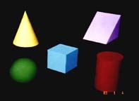
- Offset Surfaces
- Fillet Surfaces
- Interface to Moldflow
- UG-Net updated to support DECNet and DG Xodiac
- PLUSER introduced (toolkit for custom built plot drivers)
Note that this was the last release full release of Unigraphics before the introduction of Unigraphics II and while there was a Version D5.0 and D6.0, these were essentially only maintenance releases and were provided primarily for those customers who were still on 16-bit DEC and Data General systems.
Version 1.0 of UniSolids is delivered to the first customers. This release of UniSolids was only offered on 32-bit DEC VAX systems. UniSolids ran on the same design stations as Unigraphics (at least the systems with raster displays) and had a common look & feel. UniSolids was a CSG system based on the PADL-2 product. The primary method of construction was to create primitives and then to combine them together using Boolean operations to form complex models. After a model was completed it could also be exported back into Unigraphics as a fully surfaced model with all of the face normal's set correctly, which could then be meshed in GFEM and machined in CAM.
Later versions of UniSolids even had a GRIP-like language where "smart" models could be created that could be edited by changing "parameters". 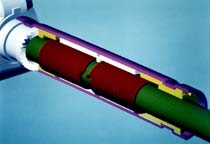In many respects, UniSolids came close to being the first true feature-based design system. However, since there was no real applications, except modeling and visualization (you could make hidden-line and fairly decent shaded images), it was never able to compete against traditional CAD systems on its own. And while the interface to Unigraphics provided a method of leveraging Solid Modeling in a CAD/CAM environment, it had only a low level of integration and changes made in UniSolids could not be associatively passed back to Unigraphics. While seeing a fair amount of success in terms of having a large number of Unigraphics customers purchasing at least 1 or 2 seats of UniSolids, it was really a very limited product, but it did provide valuable early experience for both the Unigraphics organization (development and marketing/support) and many of their customers in the use of Solid Modeling and laid the groundwork for future products. To see more examples of UniSolids models please visit the "Art Gallery".
McAuto releases Version 1.0 of UniPCB, a circuit board design product developed by the Cypress development group. UniPCB interfaced with Unigraphics first by accepting connect lists and component BOM from the Schematics package and then by being able to import the outer profiles of the models of the physical board itself.July, 1983:
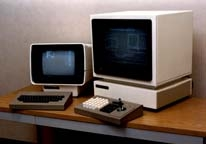August, 1983:
McAuto introduces the D-90 series of low cost design stations. This was a raster based system designed to replace the Tektronix storage-tube technology (note that it did not support either UniSolids or UniPCB). The initial model only had a black & white display, but the modular design provided a high degree of flexibility for customers and this layout was to become very popular as newer and higher performing terminals were introduced over the next several years. Also, the D-90 was a departure from the practice of integrating the hardware with a package that included free-standing furniture. Now that the terminal had been cut down to the bare essentials, McAuto was able to offer the initial models of the D-90 for the then unheard of price of only $17,500 each (remember, you still had to have a central CPU to hook the terminal to).DEC was the sponsor of the annual DEC Special Interest Group meeting held in Boxborough, MA. Note that this meeting had an expanded scope that included topics covering NC and Moldmaking as well as the traditional hardware themes. These gatherings were proving to be very popular with over 180 people in attendance at this latest meeting.
More then a year after that series of "Queen Mary" meetings that launched the largest development project yet in the history of the Unigraphics organization, McAuto announces Version 1.0 of Unigraphics II. From here on, the previous series of Unigraphics versions would always be known as Unigraphics I. As part of the marketing proposals it was decided that all future releases of Unigraphics II would only be identified by its version number with no special letter designation for any sort of sub-classification.September, 1983:In addition to a virtually complete re-architecting of the part data model (such as adding associative relationships), there were a large number of enhancements and new approaches to creating models and making drawings. Listed below are some of the major items:
Unigraphics II Version 1.0 was only available on 32-bit VAX and MV systems. And while there was limited support for the older Tektronix hardware, it was obvious that these devices were being phased out as supported terminals. Note that it would be several months before any customers actually put Unigraphics II into production but many "beta" sites were established and work went forward on fixing bugs and responding to the feedback from the early adopters.
- Unigraphics File Management (UGFM) system
- New View and Layout capabilities to support drafting
- Perspective views
- View Dependent editing
- General Part Merge as a replacement for Patterns
- User Defined Attributes
- Major improvements in Drafting functionality
- Dual Dimensioning
- Associative Dimensions, Labels, ID-Symbols and other annotation
- Class Selection Subfunction
- Grouping of Objects
- Major enhancements in CAM and GFEM
- First support for Sheet Metal operations
Version 1.1 of UniSolids is released. This version supported the Data General MV systems and also included many medium, but quite useful enhancements (most of them dealing with the types of data that was transferred between UniSolids and Unigraphics). There were also enhancements aimed at improving performance as this was always a weakness which was typical of all CSG based systems of that era (models had to be regenerated from scratch upon opening the file and after even the most simple edit or change and since CPU's had very limited power at the time, this meant that only modest designs could be created with UniSolids).February, 1984:
The 8th Annual Unigraphics Users Meeting was held at the Marriott Hotel in Anaheim, CA.March, 1984:
McAuto releases Unigraphics I Version D5.0. While this was primarily a maintenance release there were minor enhancements to NC and plotting.May, 1984:
Two new versions of the McAuto design stations were released, the D-120C and D-120CE models. There were also "M" (for monochrome) class systems that had all of the same capabilities (except that its display was Black & White) as the "C" class systems. These were basically upgraded D-100's and were the last design stations sold that were packaged as free-standing furniture. The "E" models had extended graphics capabilities that supported local hardware dynamic rotation of wire frame images as well as support for panning and continuous zooming using the joystick controls. While these stations could still be used with Unigraphics I, many of the enhanced capabilities such as increased graphics memory, the local dynamics, gray scale control of the background, etc. were only supported with Unigraphics II.June, 1984:The D-120C systems had a list price of $48,000 and the D-120CE systems were sold for $53,000. Note that these systems could also have optional shader hardware added which allowed users to display shaded images of UniSolid models. These were static images and users had to perform a software rendering of a model and then the image would be automatically displayed with what was really a second graphics driver hooked to a common display screen. This was also the only way to create hidden-line images from a UniSolids model. Up until then, users had to purchase a special second terminal that was only used to show shaded images and they had to manually switch the input before they started the rendering operation.
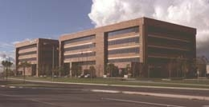The Unigraphics development organization moves into their new offices at 5701 Katella Ave. in Cypress, CA. This was the first time that the west coast operation was housed in a "real" McDonnell Douglas corporate building (designated K34) and while it was a very large and well appointed facility there were a few problems that soon cropped up. Like on the first day in the new building when about half of the staff was refused access to the building by MDC security personnel because they were not properly attired (it seems that shorts and T-shirts were not part of the approved dress code for MDC employees). This caused a lot of fuss until executive management issued their famous "Summer Attire" memo that basically stated that employees could wear whatever they wished as long as it did not create a "safety hazard", which is the way it had to be worded to satisfy corporate security.July, 1984McAuto introduces the D-90C design station. This was basically the same configuration as a D-90 except that it had a color display and replaced the metal housing of the main display with a plastic shroud. The list price of a D-90C was $27,900.
The Unigraphics DEC Special Interest Group meeting was again held in Boston, MA thanks to the ongoing sponsorship by Digital Equipment Co.October, 1984:
McAuto introduces the D-2300 design station. While there were many people who thought that it looked like a "Microwave Oven" the D-2300 was one of the most sophisticated design stationsNovember, 1984:(display resolution was an amazing 3072 X 2304 pixels) ever developed for dedicated CAD/CAM usage. In addition to being an "all-in-one" configuration, it was also the first true 3D graphics device used with Unigraphics. It supported real-time local Pan/Zoom/Rotation in both wireframe and shaded mode (another first in the CAD industry). The user interface was a radical change from previous Unigraphics design stations in that a non-traditional layout PFK was incorporated, along with the normal keyboard, into a common configuration with a separate dial box that controlled the display. This was also the first design station that was not supported by Unigraphics I, however it did support Unigraphics II, UniSolids, UniPCB and Robotics (another first as up until then Robotics was only supported on Evans & Sutherland Picture System devices). The D-2300 was first demonstrated at AutoFact 6 held in Anaheim, CA.
V2.0 of UniSolids is released. In addition to many enhancements to the solid modeler itself, this version also allowed the user to import Unigraphics 2D profiles (consisting of arcs and lines) that could then be extruded into solid models.January, 1985:
McDonnell Douglas dropped the name McAuto from its automation group and created several different "companies" each with their own identity and name. The group that included the Unigraphics group was named CIMTECH, for Computer Integrated Manufacturing Technologies Company (over the next several years, the MDC organizations responsible for Unigraphics would have many different names).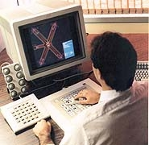February, 1985:The new CIMTECH company announced that Unigraphics II was going to be offered for sale on IBM 4300 series mainframe CPU's and would fully support the new IBM 5080 display stations. The 5080's were similar to the D-2300's in that they supported local dynamic display (pan/zoom/rotate) control for both wireframe and shaded images (in fact Unigraphics was the first commercial product that supported these features on the 5080, well before software products such as Cadam and Catia, which were actually being marketed by IBM, supported them). Note that this was also the first time that Unigraphics supported a display station that did not use a separate message monitor. The Unigraphics menus were displayed in a medium "window" superimposed on the graphics display (as shown at the right) in what turned out to be a precursor for what one day was to become the norm.
The 9th Annual Unigraphics Users Meeting was held at the Hyatt Regency Hotel in Long Beach, CA. The high point of the meeting was the private reception held at the "Spruce Goose" exhibition hall for nearly 450 attendees. One of the key topics of this meeting was the transition, or lack there of, of the user community from Unigraphics I to Unigraphics II. The product had been available for about a year and yet only a limited number of customers had yet gone into full production and so there were several presentations that covered the topic in some detail.March, 1985: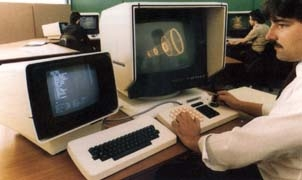Introduced at this meeting were the new D-125 design stations. These were offered as replacements for the D-120 series however they were configured similar to the D-90 in that they were not a piece of furniture but rather separate display and message monitors. Also this marked the replacement of the metal enclosed keyboard and PFK with more modern looking plastic housings. The D-125 also marked the end of monochrome systems as it was only available with a color display, however it still included both a C and a CE version (the "C" designation was still used even though there was no monochrome version). The list prices for the C and CE versions were reduced to $43,000 and $48,000 respectively (but remember this did not include a table or furniture). These were also the last new design stations that would fully support Unigraphics I.
Version 2.1 of UniSolids is released. The major enhancements included the ability to create solids of revolution using a 2D profile of curves imported from Unigraphics as well as supporting hidden-line-removal as a display option (up until then, you could only get a HLR display as part of the static "rendered" image similar to shading).
Version 2.0 of Unigraphics II is finally released (almost a year and half after the introduction of Version 1.0). The vast majority of the effort was dedicated to improving both performance and reliability. Functional enhancements included the following:April, 1985:
- Mechanisms Module
- GSSM (Graphics Sequential Surface Machining) Module which introduced full APT like tool and surface containment capabilities
- Major enhancements to GSM
- Silhouette curves from analytic surfaces
- Enhanced Calculator functions
- Introduction of Customer Defaults as a user modifiable file (up until then, Customer Defaults were set using a program where users had to answer a long series of questions each time they wished to make even a single change)
- GRIP enhancements included support for mass property calculations and object attributes
McDonnell Douglas changes the CIMTECH name to MISCO (Manufacturing Industry Systems Company) and John Clancy was appointed President and George Meister relocated to St. Louis, MO where he assumed the role of vice president and General Manager of the CAD/CAM/CAE division. From this point forward, St. Louis would be the official "world headquarters" of the company despite the fact that Cypress remained the primary development and support location. We also got from this a new MDC marketing trust that included a new logo associated with the various computer related divisions including MISCO and Unigraphics.June, 1985:
By the middle of 1985, there were 377 companies using Unigraphics products around the world (up from just 56 customers in January, 1981) consisting of 601 systems (note that at that time, Unigraphics was still being licensed on a per system basis and not by the seat). Below are some charts showing the breakdown of Unigraphics products and the platform brands.July, 1985:
System Software
UGI UGII Robotics (only) Total Hardware Platforms
DEC DG IBM A-100 Total Systems With Additional Products
UniSolids PCB Robotics
The D-2300 is finally ready to be sold to customers, however it would be October before any were actually delivered. While the D-2300 represented the leading edge display capabilities of the era, and even with its fully dynamic, ultra-high resolution shaded displays and integrated message monitors and PFK's, it was never a popular system due to many things, not the least of which was the price (in excess of $60,000) and a history of unreliable service (however, some were in fully production right up until the introduction of Unigraphics V10.0 which finally obsoleted them along with all other non-X-window displays).August, 1985:
The last full enhancement release of Unigraphics I was released, Version D6.0. Unigraphics I went into a maintenance only mode about 6 months later with only critical fixes being supplied in the form of software patches. However, since the software itself was still fully usable, as long as customers were able to maintain the hardware (CPU's and Design Stations) Unigraphics I saw continuous use well into the 1990's and since the actual UGI to UGII conversion software was being supplied with each release of Unigraphics II, many customers did not fully convert until many years later (who knows, there may be a few seats running out there still today).September, 1985:
What was now being called the DEC/NC/Moldmaking Special Interest Seminar was held at the Copley Plaza in Boston, MA and was again sponsored by Digital Equipment Co. (DEC). This marked the final migration of this meeting to a fall format. Nearly 350 people attended this meeting and it slowly took on the role of a major meeting, which in the years ahead provided an east coast opportunity for many users to attend a meeting closer to home then the annual trek to Southern California afforded them.October, 1985:
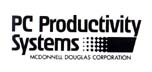McDonnell Douglas forms a new software division called PC Productivity Systems. This organization was to develop a new PC based CAD system using the code for Unigraphics I as a starting point. A medium team of people from the Unigraphics group were transferred to this company and it was set up as a totally separate entity (actually work had been under way since May, 1985 but this was the official announcement). The idea was to design a true 3D CAD/CAM product that could run on the PC's of the day. At the time only drafting systems were available on PC's and it was felt that someday that this growing segment of the industry might be important and so this effort was launched to gain an early foothold in this area.November, 1985:Version 3.0 of UniSolids is released. In addition to improved performance and support of the D-2300, UniSolids 3.0 also provided support for a Torus primitive, tapered extruded solids and batch shading.
MISCO announces the release of V3.0 of Unigraphics II. In addition to many functional enhancements, there were also improvements to the display system (full support of the D-2300 including shaded displays as promised earlier) and the release of the UniPIX product.UniPIX was based on a product developed at Brigham Young University called BYU-Movie. This was an early attempt at providing high-quailty rendering of images from models created in Unigraphics. It worked on surfaced models (which included models imported from UniSolids) and provided both shading and hidden-line-removal output. This product was supported on all color design stations including the D-90C and the D-120/125CE as well as the D-2300 and IBM 5080 (the last two stations provided the best results of course due to the already very good support of color shading). The software was sold on a per seat basis for $2,000.
Also in November the first version of the GRIP International Library was released. This consisted of a collection of GRIP programs submitted by customers as well as many from technical people at Unigraphics. In the beginning the library was distributed on a 9-track tape and was provided to customers, for no charge, by request only. Later, after Unigraphics started to be distribute their products on CD-ROM, the GRIP International Library was included on the software CD so that all customers could get immediate access to the files whenever they needed them. The files are also available for download from the Unigraphics BBS.
Continue to page 2 of The 80s